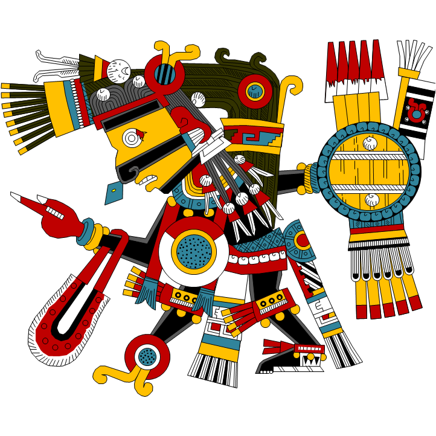

Cartografía · 2024 – 2026
Ohtli
Desplázate hacia los cuatro rumbos del Valle de México o toca cada emblema para invocar su memoria.

Norte · Tezcatlipoca Oriente · Xipe Tótec
Oriente · Xipe Tótec
 Poniente · Quetzalcóatl
Poniente · Quetzalcóatl
 Sur · Huitzilopochtli
Sur · Huitzilopochtli